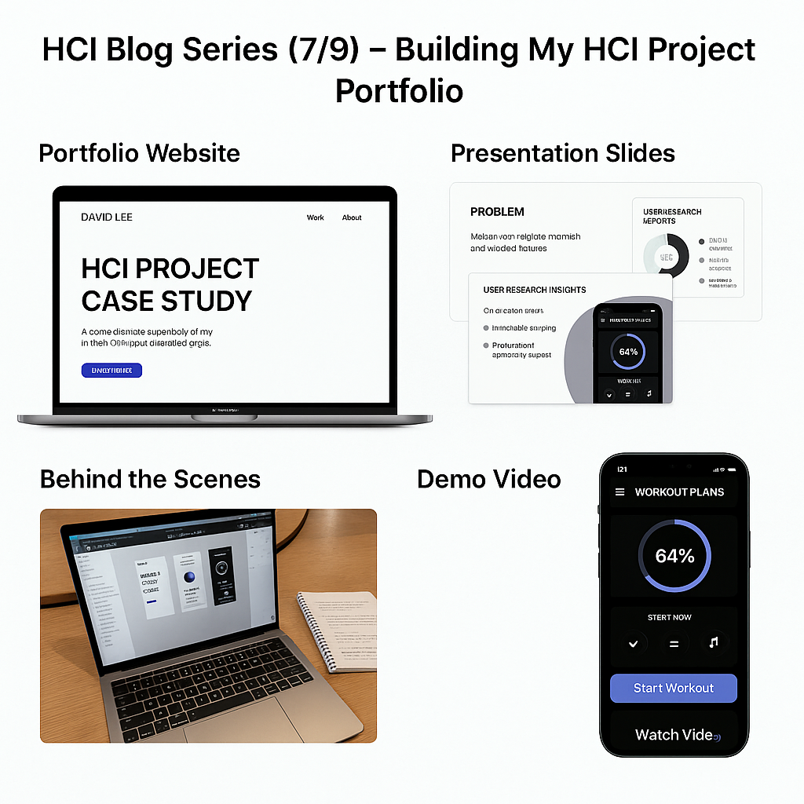

I used GitHub Pages to host my portfolio website. The site mirrors my app's clean, dark-themed UI and organizes content into sections for user research, prototypes, and final reflections. The slide deck complements this by walking viewers through my design journey with structured storytelling.
I focused on clarity and flow. Key insights from user research, design decisions, and usability feedback were spotlighted. Annotated screenshots and before-after slides helped emphasize growth.
I learned the value of simplicity and visual storytelling. The deck structure helped me clearly present decisions to non-designers, and rehearsals helped improve delivery.
This experience turned me into more than just a designer—I became a storyteller. I learned how to connect with users, explain my thinking clearly, and present a polished, thoughtful experience.